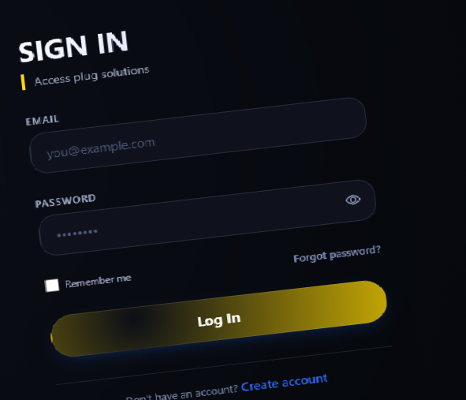
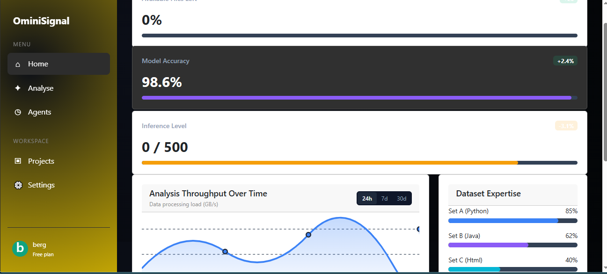

1. Setting Up Your Account

1. Create Your Account
Sign up and provide the basic information required to access OminiSignal.
2. Complete Your Profile
Add the information needed to personalize your workspace.
3. Verify Your Account
Complete any required verification steps before accessing your workspace.
4. Enter Your Workspace
Once setup is complete, head to your dashboard.
Setting up your account gives you access to your personal OminiSignal workspace.
Keep your account information accurate so your workspace remains organized.
2. Navigating the Dashboard

1. Main Sidebar
Use the sidebar to move between the different areas of your workspace.
2. Quick Access
Quickly access frequently used features from your dashboard.
3. Your Workspace
Your workspace contains your projects, tools and important information.
4. Activity Feed
Monitor recent actions and important activity within your workspace.
The dashboard is your central location for managing your OminiSignal workspace.
Familiarize yourself with the sidebar first. It makes navigation much faster.
3. Creating Your First Project
1. Open Projects
Navigate to the Projects area from your dashboard.
2. Create a Project
Select the option to create a new project and provide the required information.
3. Configure Your Project
Set up the project's settings and customize it according to your needs.
4. AI Working
Once created, your project will be ready for you to Ai will start working.
Projects keep your work organized and separate from other activities.
Give your projects clear names so they are easy to identify later.
4. Best Practices
Keep Projects Organized
Use clear project names and keep related work together.
Review Your Activity
Check your activity regularly to stay aware of changes in your workspace.
Protect Your Account
Use strong account credentials and avoid sharing private account information.
Keep Your Workspace Clean
Remove unnecessary projects and files when they are no longer needed.
5. Next Steps
Explore Your Workspace
Take some time to explore the available tools and features.
Create More Projects
Start creating projects and experiment with the platform.
Learn More
Continue exploring the documentation and available features.
Get Started
You're ready to start using OminiSignal.